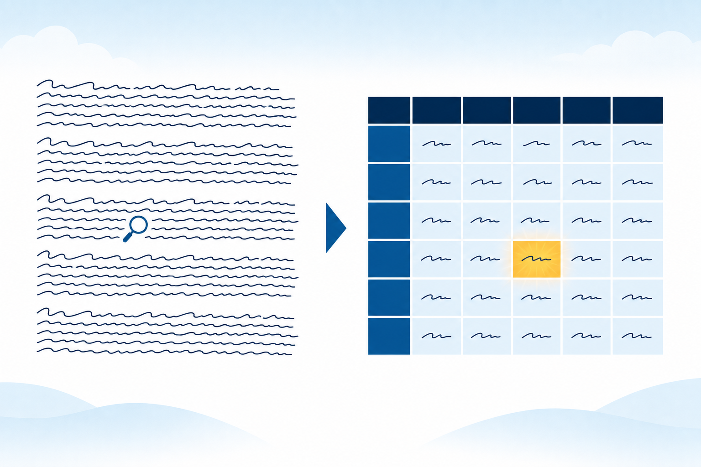
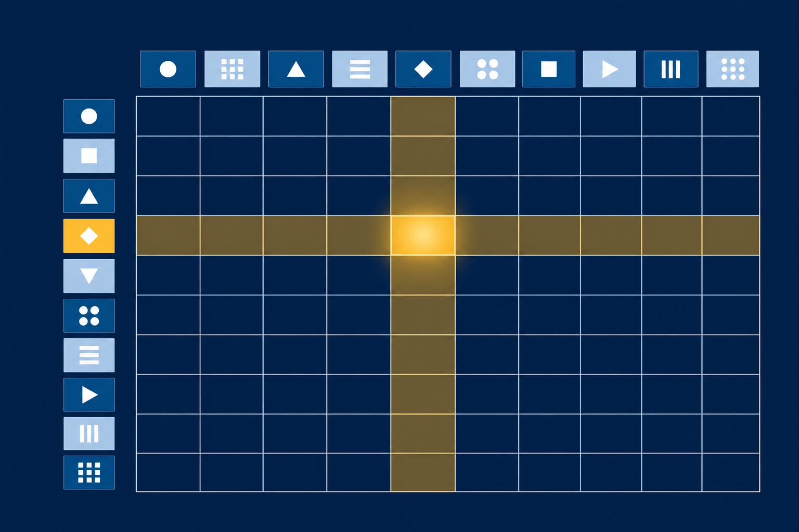
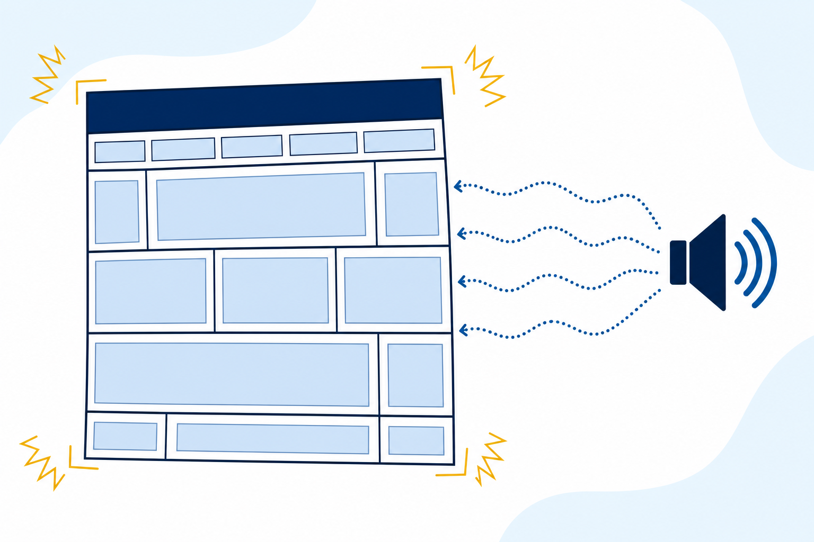
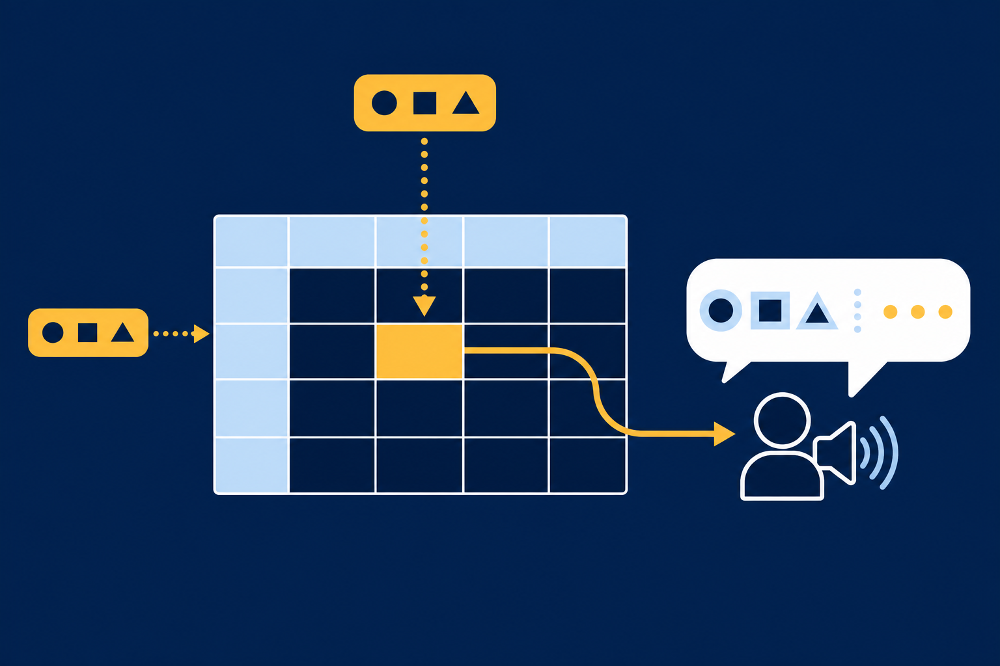

Judge
Tell table data from lists, prose, and layout, and defend the call.
Six paragraphs held the fall schedule. Nobody could find the workshop.
Tell table data from lists, prose, and layout, and defend the call.
Rows, headers, caption, and scope: a grid every tool can read.
The events page: a styled schedule, live in every page's nav.


0The welcome paragraph · sentences carry it · prose
1The enrollment steps · position carries it · ordered list
2The drop-in schedule · row and column carry it · table

<!-- One tr per subject, one td per fact. -->
<table>
<tr>
<td>Algebra</td> <td>Monday</td> <td>10:00 to 1:00</td>
</tr>
<tr>
<td>Biology</td> <td>Tuesday</td> <td>1:00 to 4:00</td>
</tr>
</table>Every first cell stacks into column one. Position is a promise: same cell count, every row.
<th>this cell names things · Subject, Day, Hours
<td>this cell holds one value · Algebra, Monday
<thead>groups the header row · the namers
<tbody>groups the data rows · the named
Nothing visible changes. The split is a claim, and a style rule collects on it soon.
<!-- YOUR FILE: no grouping written -->
<table>
<tr>...</tr>
<tr>...</tr>
</table><!-- DEVTOOLS: what the browser serves -->
<table>
<tbody>
<tr>...</tr>
<tr>...</tr>
</tbody>
</table>Write the structure yourself, and your file matches the page every tool reads.
Predict: what does the browser draw for that row, and what does the checker report: error, warning, or silence?
<table>
<caption>Fall drop-in tutoring schedule</caption>
<thead>
<tr> <th scope="col">Subject</th> <th scope="col">Hours</th> </tr>
</thead>
<tbody>
<tr> <th scope="row">Chemistry</th> <td>2:00 to 5:00</td> </tr>
</tbody>
</table>
scope="row"scope="col"
Name which cells become <th>, and assign each its scope value.
<th scope="col">, governing down · Room names: <th scope="row">, governing across · every other cell stays a <td>table {
border-collapse: collapse; /* one line per boundary */
width: 100%; /* claim the container */
}
th, td {
border: 1px solid #333333;
padding: 8px 12px; /* values off their walls */
text-align: left; /* headers over their columns */
}Without the collapse, every interior line draws doubled: the browser keeps a 2px gap between cells.
/* Structural pseudo-class: position among siblings. */
tbody tr:nth-child(even) {
background-color: #f2f2f2;
}
/* After the stripe on purpose: ties go to the later rule. */
tbody tr:hover {
background-color: #e0e0e0;
}A stripe sits behind body text. Same contrast bar as everything else: measured, never eyeballed.
Predict: the file adds tbody tr:nth-child(even). Which rows paint?
<thead> and <tbody> yourself and the stripe moves to data rows 2 and 4<div class="table-scroll">
<table> ... </table>
</div>
.table-scroll {
overflow-x: auto;
}The page, the accessible grid, the nav on all four pages.
Collapse, borders, and a stripe from the passing list.
The phone test: audit first, then the wrapper.
Seven checks, both validators, zero messages.
Estimated time: 4-5 hours · Submit skills-lab-10a-lastname.zip · Milestone 2 follows this pattern
Two axes earn a table. One stays a list.
Caption first, namers grouped, scope both ways.
nth-child counts position. The split sets the count.
The wrapper pans. The page stands still.
Exit ticket: name the two pieces of table markup that exist for tools, not pixels, and what a screen reader does with each.
Next: the join page. Forms are the first element that listens back.